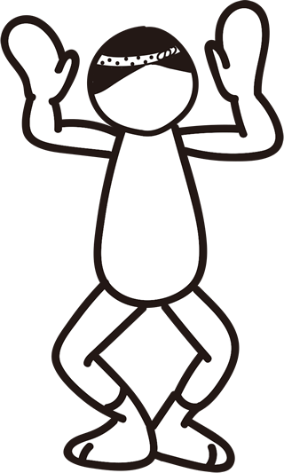

男舞
-
STEP 1
將手心放在臉部附近，肘部和肘部向外展開，形成“八”的形狀。
下半身，膝蓋朝外彎曲成“口”的形狀。
腰部向下沉。基本上手臂應該高於肩膀。 -
STEP 2
右手和右腳一起向右前方斜出。
手臂只向外展開到肘部以上。
此時手掌應該面向前方，腳尖向前。 -
STEP 3
右腳的腳尖輕輕觸地後稍微抬起。
-
 STEP 4
再次將腳尖放在地面上。
然後將重心放在右腳上。此時腳跟應向內，膝蓋和腳尖應向外。
同時將右手掌放在臉部位置。 -

STEP 5
將右手掌放在臉部位置，身體向左轉，左手和左腳一起向左前方斜出。
肘部以上手臂應該向外展開。手掌應該面向前方。
左腳的腳尖也應該向前。 -
STEP 6
左腳的腳尖輕輕觸地後稍微抬起。
-
STEP 7
再次將腳尖放在地面上。
然後將重心放在左腳上。此時腳跟應向內，腳尖應向外。
同時將手掌放在臉部位置。 -
STEP 8
將左手掌放在臉部位置，身體向右轉，右手和右腳一起向右前方斜出。
手臂應該向外展開到肘部以上。手掌應該面向前方。
右腳的腳尖也應該向前。重複步驟2至7，節奏地向前行進。
女舞
-
STEP 1
雙臂從肩部上方垂直向上伸展。
肘部輕微彎曲，稍微向前伸展。
手腕不要彎曲，手指向上，手掌稍微向內。
下半身稍微彎曲膝蓋，腰部向下沉。
將左右膝蓋合攏，腳尖向內，腳跟抬起。
-

STEP 2
身體向右轉，右手向前伸展。
肘部伸直，手臂直接向前伸展。
手掌保持稍微向內。
同時，右腳向後方踢出，大腿抬起。
右腳跟應該輕觸臀部，腳尖向下。
-
STEP 3
右腳移到左腳前方。
-
STEP 4
同時將右手放在右耳附近，身體向左轉，左手向前伸展。
肘部伸直，手臂直接向前伸展。
手掌保持稍微向內。
同時，左腳向後方踢出，大腿抬起。
左腳跟應該輕觸臀部，腳尖向下。
-
STEP 5
左腳移到右腳前方。
-
STEP 6
重複步驟2至5，節奏地向前行進。